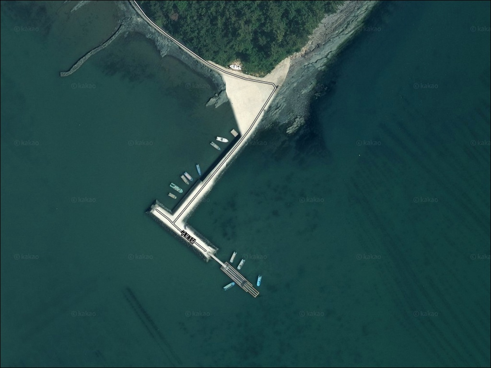
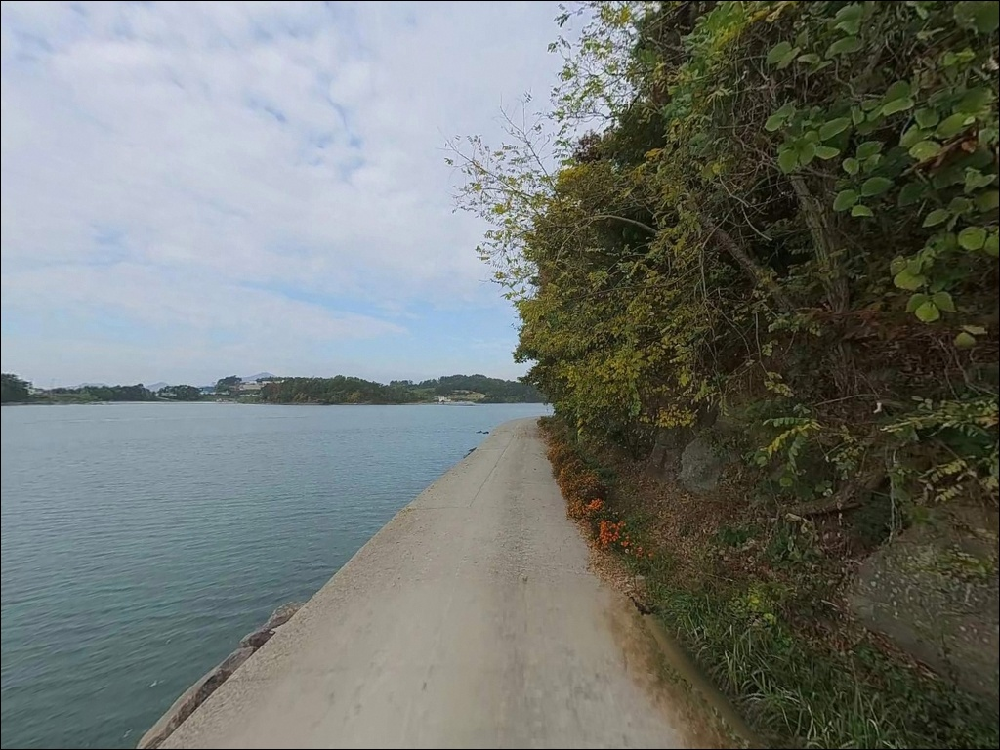
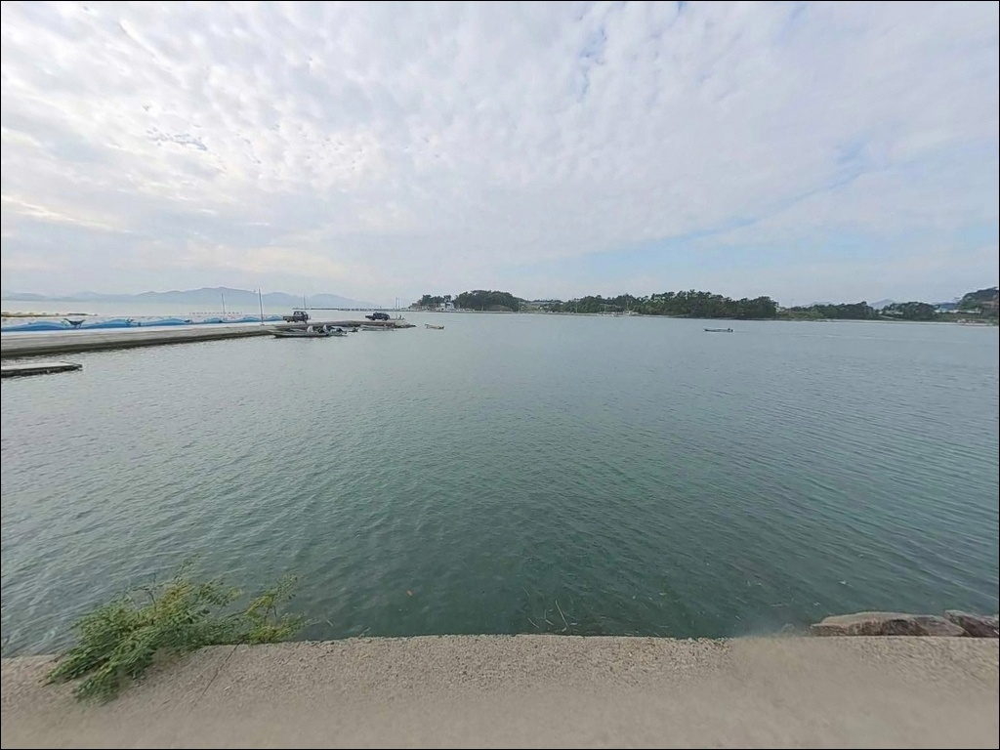
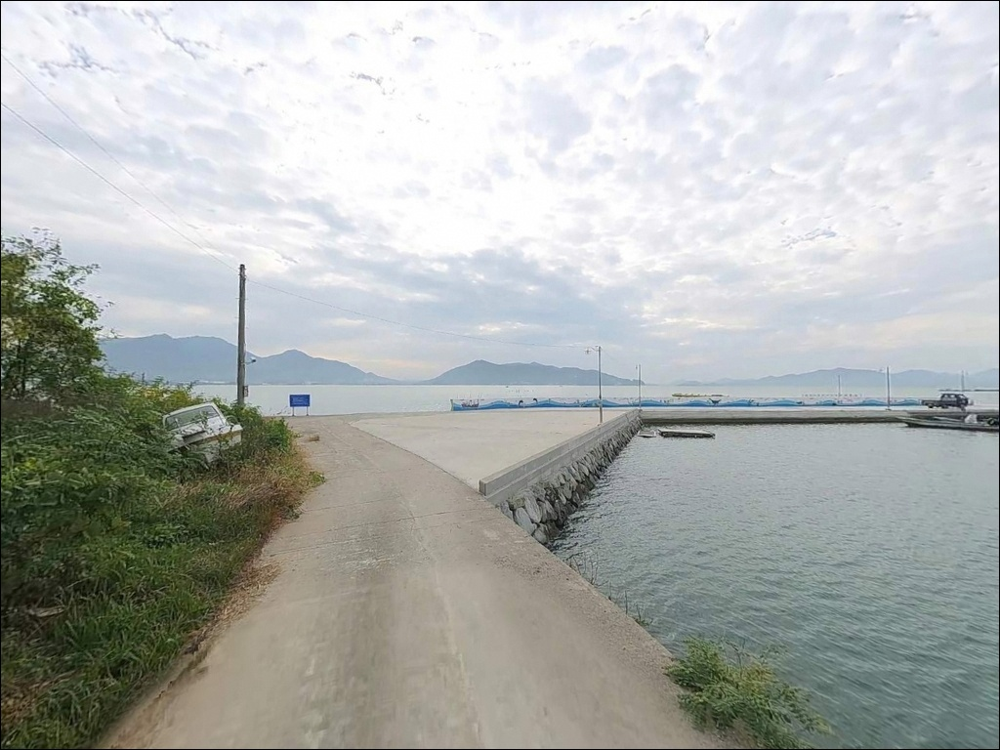
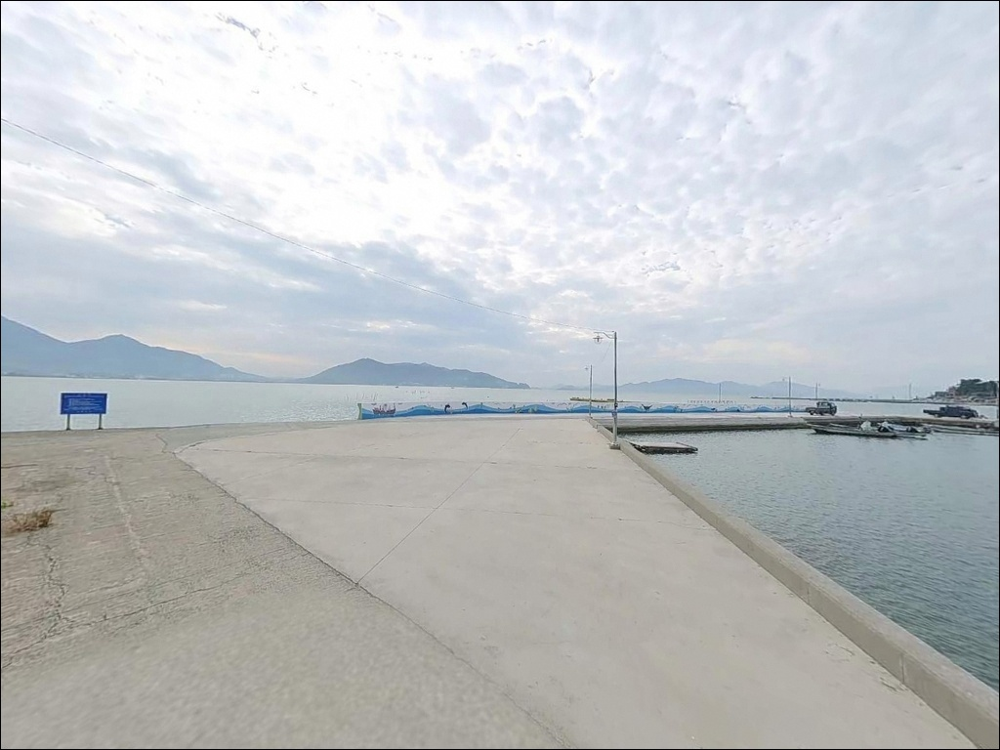
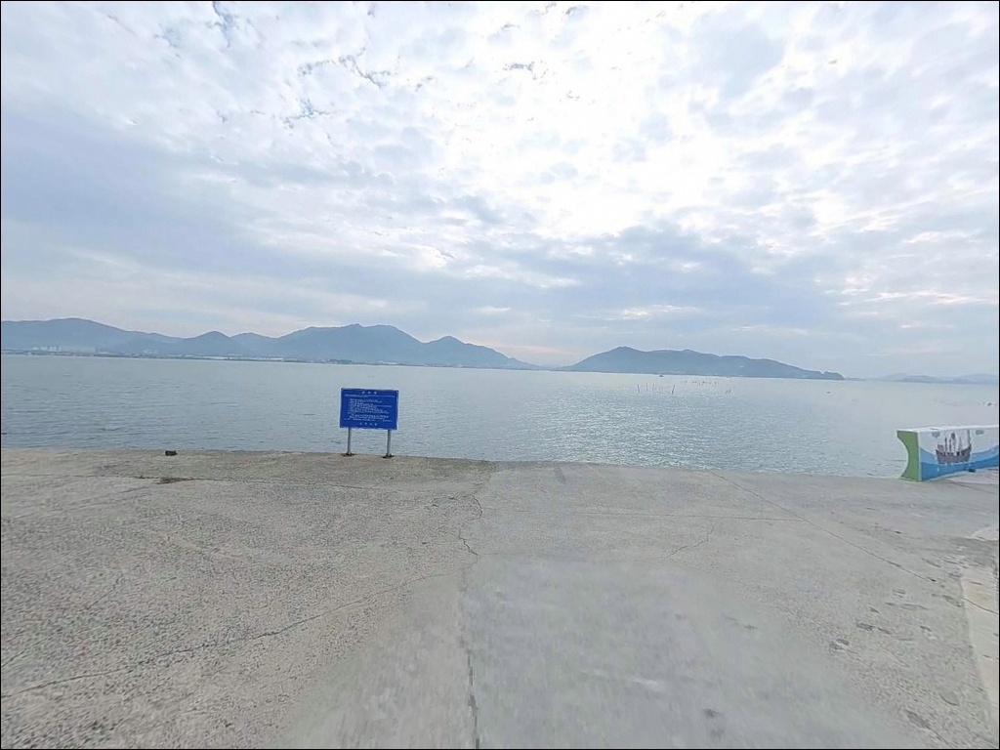
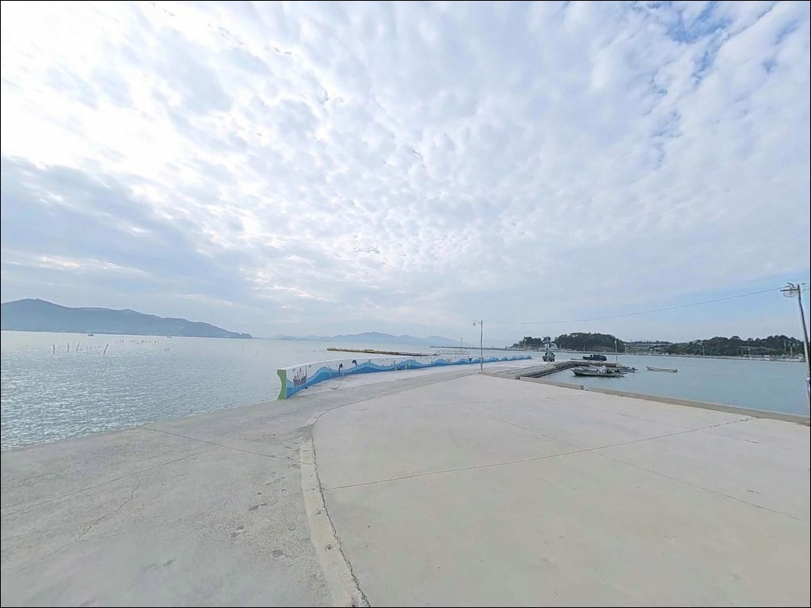
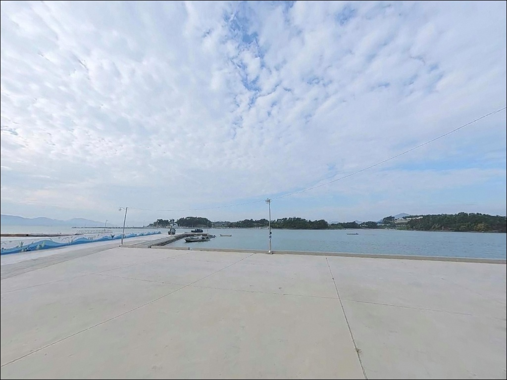
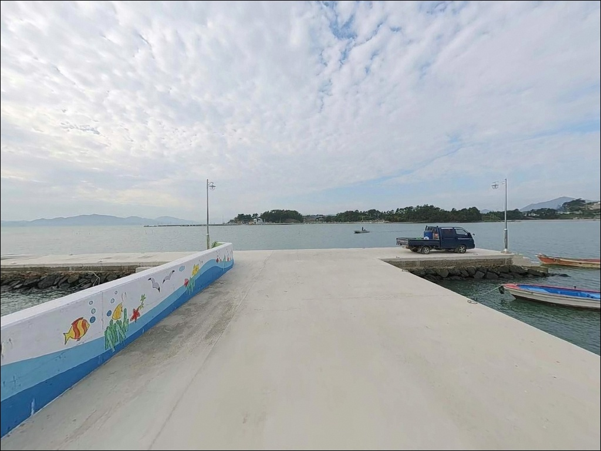

간조 때 수심 1m 이하로 내려갈 때, 사천 구포항 방파제 원투낚시 만조 타이밍
이 페이지에는 광고(제휴 링크 포함)가 있으며, 광고 링크를 통해 구매하면 운영자가 판매 수익 또는 수수료를 받을 수 있습니다. 포인트 사진: 카카오맵 스카이뷰·로드뷰. 이 페이지의 지도·사진 이미지는 카카오맵의 실제 서비스 이미지와 다를 수 있습니다.


포인트 안내
구포항
경남 사천시 서포면 자혜리 904-7
사천만 내만 구조의 이 포인트에서
가장 많이 틀리는 판단은 물때 확인 없이 출발하는 것입니다.
간조 전후 2시간은 방파제 주변 수심이 1m 이하로 낮아져
어떤 채비를 써도 운용 자체가 어려워집니다.
물때를 모르고 찾아가면
채비를 펴보지도 못하고 돌아서는 상황이
실제로 발생하는 포인트입니다.
이 글은 구포항의 물때 판단 기준과
진입 환경, 지형 조건, 낚시 스타일별 공략 방법에 집중합니다.
조황 단정이나 특정 어종 보장은
이 글의 범위에 포함되지 않습니다.

1. 진입 동선과 포인트 접근 조건
구포항은 사천대교 서단과 인접한 자혜리 해안에 자리합니다.
어촌뉴딜300사업으로 진입도로가 확장·보강되어
대형 차량 교행과 회차가 가능한 수준으로
정비된 상태입니다.
승용차·SUV는 물론 캠핑카 진입도
무리 없이 가능한 편입니다.
사천대교에서 자혜리 방향 해안도로를 따라 진입하는 동선이
가장 명확합니다.
마지막 구간에서 해안선을 따라
포인트 방향으로 이어지는 구조입니다.
주차는 방파제 인근 배후 부지와
선착장 접안면 옆 콘크리트 포장 공간을 활용합니다.
캠핑장 데크 구역도 주차 후보지로 활용 가능하며,
어선 출입 동선을 막지 않는 위치 선택이
기본 매너입니다.

2. 차박 환경과 야간 체류 여건
구포항에는 어촌뉴딜300사업으로 조성된 공식 캠핑장이 운영됩니다.
4,205㎡ 규모에 24개 데크 사이트,
관리동, 공동화장실, 전기시설, 취사장을 갖추고 있어
차박을 겸한 낚시 일정에 현실적인 선택지가 됩니다.
야간 환경은 방파제 일대에
보안등·가로등 5개소와 야간 조명 조형물이 설치되어 있어
기본 광량이 확보되는 편입니다.
민가와의 거리도 적당히 유지되는 구조로
차박 프라이버시는 양호한 편입니다.
어선 출항은 이른 새벽부터 시작됩니다.
선착장 바로 앞 주차는 피하고
배후 캠핑장 구역을 활용하는 것이
어업 작업 방해를 피하는 현실적인 방법입니다.


3. 주변 편의시설 및 인프라 현황
캠핑장 내 공동화장실과 취사장이 갖춰져 있어
기본 위생 여건은 포인트 내에서 해결할 수 있습니다.
반경 3km 이내에는 서포면 소재지 방향으로
소규모 가게를 이용할 수 있는 수준입니다.
식자재나 낚시 소품, 연료는
출발 전 사천 시내 삼천포 방향에서
충분히 준비하는 것이 현실적입니다.
곤양읍 방향(약 10~12km)에
편의점·주유소·약국이 집적된 읍 단위 상권이 있어
이 동선을 보조 인프라로 활용할 수 있습니다.
사천대교 방면 반경 3km 내에는
해안 산책로와 공원이 조성되어 있어
낚시 외 시간 활용도 가능한 환경입니다.

4. 만조 타이밍을 놓치지 않기 위한 준비 기준
구포항 방문 전 가장 먼저 확인해야 할 것은 물때입니다.
바다타임에서 서포면 자혜리 기준 물때를 확인하고,
만조 전후 2시간을 중심으로
출조 시각을 맞추는 것이 기본 전략입니다.
간조 전후 2시간은 채비 투입 자체가 의미 없는 수심 조건입니다.
사천만 내만에는 양식장이 넓게 분포합니다.
채비가 어업 시설 방향으로 흘러가지 않도록
캐스팅 방향을 사전에 파악해 두는 것이 좋습니다.
봉돌 무게는 조류 흐름을 고려해
넉넉한 호수를 준비하는 편이 유리합니다.
야간 낚시라면 헤드랜턴은 필수입니다.
방파제 석축 이동 시 미끄럼 방지 신발과
구명조끼를 반드시 착용합니다.
기상 확인은 출조 전날과 당일 오전 두 차례 진행하는 것이
안전한 출조를 위한 기본 조건입니다.

5. 지형 기반 낚시 여건 분석
구포항은 사천만 서안 깊숙한 곳에 자리한
어촌정주어항입니다.
사천만은 전형적인 리아스식 내만으로
바닥은 뻘과 모래가 혼합된 지형이 주를 이룹니다.
외해 너울이 차단된 구조여서
바람이 강한 날에도 포인트 자체의 파고는
비교적 안정적인 편입니다.
방파제는 길이 70m·폭 7m,
부잔교는 길이 100m·폭 5.2m로
어촌뉴딜300사업을 통해 새로 조성된 시설입니다.
만조 기준 방파제 전면 수심은 4~6m 내외가 형성되며,
방파제 끝단(콧부리) 방향으로
수심이 다소 깊어지는 구조입니다.
부잔교는 간조 시에도 안정적으로 이용 가능해
수심 변화에 따른 자리 이동이 편리합니다.
만조·간조 전환 시 사천만 안쪽 물골을 따라
조류가 흐르며, 방파제 끝단에서
이 조류 흐름이 낚시 포인트를 형성합니다.
사천만 내만 해역 패턴을 기준으로,
이 구조의 방파제에서는
원투낚시로 붕장어·망둥어가 연중 기대되며
봄과 가을에는 감성돔도 노려볼 수 있는 지형 조건입니다.
사천만 내만 구조의 방파제 포인트는
만조 전후 2시간이 낚시 가능 시간을 결정합니다.
출조 전 구포항 조황, 자혜리 낚시,
서포면 방파제 낚시로 최신 현장 정보를
꼭 검색해 보시기 바랍니다.


6. 포인트 지형에 어울리는 낚시 스타일
원투낚시가 이 포인트 지형에 가장 잘 맞는 스타일입니다.
뻘·모래 혼합 바닥에 봉돌을 이용해
방파제 끝단 외항 방향으로 50m 내외 캐스팅하는 방식이 기본입니다.
만조 전후 2시간이 유효 시간대이며,
연중 붕장어와 망둥어를 기대할 수 있는 구조입니다.
봄과 가을 감성돔도 이 방식으로 노려볼 수 있습니다.
찌낚시는 조류가 전환되는 정조 타이밍에 운용합니다.
방파제 콧부리 외항 방향으로 자리를 잡으면
내만 특유의 안정된 물색에서
입질 집중 타이밍을 잡기에 유리합니다.
볼락 라이트게임도 병행 가능합니다.
방파제 주변 석축과 테트라포드 틈새를 대상으로
소형 지그헤드 채비로 천천히 탐색하는 방식입니다.
야간 보안등 주변에서 소형 루어에 반응이 형성되는
어항 특유의 야간 루어 환경이 만들어집니다.
어촌뉴딜300사업으로 정비된 구포항은
70m 방파제와 캠핑장을 갖춘
복합 낚시·차박 거점입니다.

7. 대안 포인트와 플랜 B 동선
구포항 조건이 여의치 않을 때
첫 번째로 이동할 대안은
비토섬 수협공판장 방파제입니다.
구포항에서 약 6~7km 거리로,
동일한 사천만 내만권 해역 조건을 공유합니다.
만조 기준 수심 5~6m로
조류 흐름이 비교적 양호한 편입니다.
낚시 시설과 편의 인프라를 동시에 원한다면
비토해양낚시공원(약 7~8km)이 현실적인 대안입니다.
주차장·화장실·매점 등 편의 여건이 잘 갖춰져 있어
원투와 루어 방식을 모두 운용하기 좋은 환경입니다.
구포항을 처음 찾는다면
비토해양낚시공원을 기점으로 삼고
구포항을 병행 탐색하는 동선이 효율적입니다.
사천대교 하부는 교각 인근 수로 구조로
조류 소통이 활발한 편입니다.
야간에 농어 루어낚시를 운용하기에
적합한 환경이며,
구포항과 함께 묶어 돌아보기 좋은
당일 복합 동선으로 활용할 수 있습니다.

만조를 알고 가면
구포항이 달라 보입니다
방파제 원투낚시를 즐기는 조사님이라면
구포항의 지형 조건은 잘 맞는 구조입니다.
뻘·모래 혼합 바닥의 내만 지형은
날씨가 거친 날에도 비교적 안정된
낚시 환경을 만들어 주는 편이며,
어촌뉴딜300사업으로 정비된 방파제와 부잔교는
간조 시에도 자리 이동이 자유로운
운용 조건을 갖추고 있습니다.
반면 물때 계산 없이 간조 타이밍에 도착하거나,
채비 준비 없이 처음 방문한다면
포인트 본래의 조건을 활용하기 어렵습니다.
만조 타이밍 확인, 자급 물자 준비, 어업 시설 존중,
이 세 가지를 갖추고 가면
조용하고 안정적인 출조가 될 포인트입니다.
공식 캠핑장에서 하룻밤 머물며
새벽 만조 시간을 노리는 낚시꾼이라면,
사천만 서안의 이 조용한 어항이
낚시와 차박을 함께 즐기기 좋은
출발점이 될 수 있습니다.